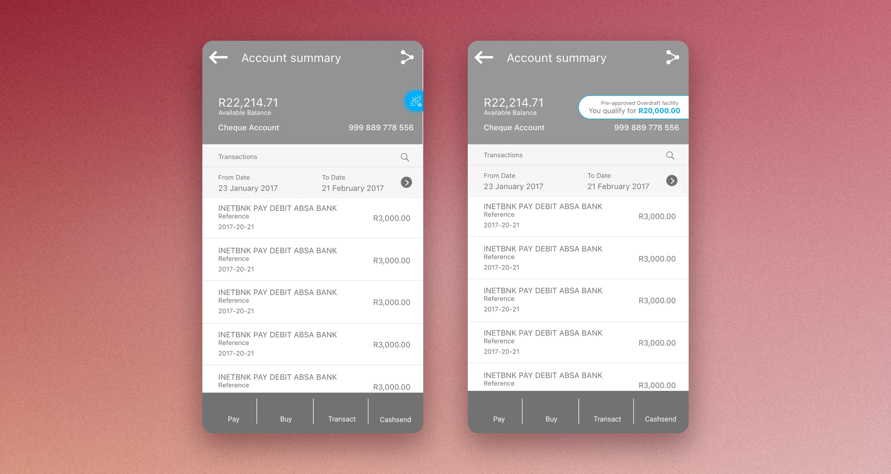
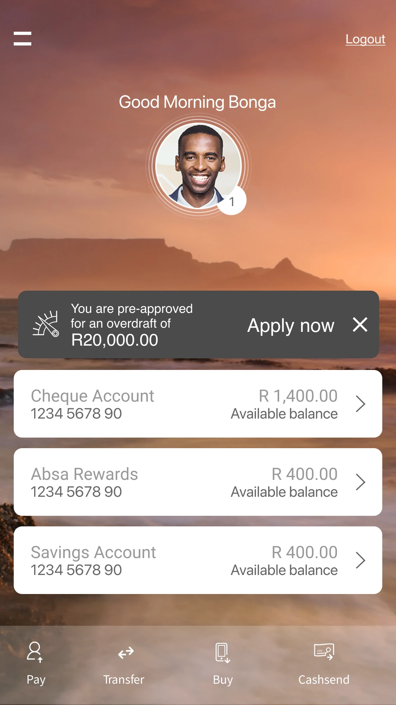

No dark patterns
Part of the Absa App overdraft case study. Absa, 2016. Lead UX Designer.
In 2016 we added overdraft applications to the Absa app. The form was the easy part. The harder question was how a customer would find out they qualified at all. An overdraft offer is a sales message sitting right next to someone’s money, and it can easily turn into a nudge toward debt.
So we set one rule before we drew anything: no dark patterns. No full-screen takeovers, nothing flashing, nothing that hides the balance.
The balance is what people came for
People open a banking app to see what they have. Anything we added had to stay smaller than that number. So every concept started from the account screen as it already was, and asked how little we could add and still be noticed.
Four placements on the same screen
The first idea was a small round badge on the edge of the balance header. On its own it says almost nothing. Tap it and it opens into “Pre-approved overdraft facility. You qualify for R20,000.00”. Nothing is pushed at you unless you ask.


Concept 1, closed (left) and tapped open (right). The amount only shows when you ask for it.
The second put the same message in a thin strip between the header and the transactions. It’s easier to spot, and it also takes a full row on every visit.
On the newer card layout we tried a tab peeking out of the balance card, then a bar inside it that reads as part of the account. We also explored messages you could dismiss for now or for good, and a card that only appears when your balance drops below a set level.


Concept 2, a strip that's always visible (left), and concept 4, a bar inside the balance card (right). The available balance is still the largest text.
Where it landed
The final design uses a single card under the greeting: “You are pre-approved for an overdraft of R20,000.00”, with Apply now and an X to close it. The same card sits on the account summary. It’s clear about what it is, it’s one tap to act on, and it’s one tap to get rid of.

The final home screen: one closable card above the accounts.
Easy to dismiss, easy to find again
Closing the card shouldn’t mean losing the offer. Every pre-approved product also lives on one page, My Offers, under the All about me menu: the overdraft, a credit limit increase and a pre-approved loan. People who’d rather look than be told know where to go.

My Offers: every pre-approved product in one list, for people who go looking.
What I’d keep from this
An offer that respects the customer is easy to dismiss and easy to find again. The X handles the first part and My Offers handles the second. It’s the test I’d bring to any team that wants to put a sales message near someone’s money.